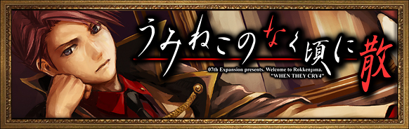

Silver Forest（シルバーフォレスト）は2006年4月から活動を始めたサークルです
東方Project(紺珠伝、輝針城、神霊廟、星蓮船、地霊殿、風神録、永夜抄、妖々夢、紅魔郷etc)の
アレンジCDを制作しています
「うみねこのなく頃に」では原作の楽曲を作らせてもらっています

太鼓の達人、SOUND VOLTEX、CHUNITHM、maimai、グルーヴコースター、オンゲキなどの音ゲーに
楽曲を提供させて貰っています
Biography
2019年12月：ボーカルさゆりがSilver Forestに復帰
2018年10月：DAMでカラオケ配信スタート
2017年8月：「Super Forest Beat」ユーロビートCDシリーズ開始
2016年12月：PS4版「東方深秘録」で「感情の摩天楼 ～ Cosmic Mind」のアレンジを担当
2014年12月：太鼓の達人にオリジナル楽曲「闇の魔法少女」入曲
2014年9月：太鼓の達人にオリジナル楽曲「夢幻の蒼空」入曲
2013年12月：復活
2013年9月：東京ゲームショウ (幕張メッセ)出演
2012年5月：解散
2012年4月：ニコニコ超パーティ (幕張メッセ イベントホール)出演
2011年9月：博麗神社例大祭SP2 LIVE (東京ビッグサイト)出演
2011年5月：Flowering Night 2011 (STUDIO COAST ageHa)出演
2010年9月：博麗神社例大祭SP LIVE (東京ビッグサイト)出演
2010年8月：JOYSOUNDでカラオケ配信スタート
2008年9月：初ライブ Project.S (アストロホール)出演
2007年12月：sweet little sister ケロ⑨destiny(東方蒼天歌)をリリース
2007年4月：つるぺったん(東方萃奏楽)をリリース
2007年2月：サークルメンバーがほぼ固まり、アルバムGRAZEをリリース
2007年2月：その後、ヴォーカルアレンジ中心の東方アレンジCDをリリース
2006年4月：結成
■主な楽曲
sweet little sister 1000万再生
つるぺったん 600万再生
など東方アレンジ楽曲がメインです
その他の楽曲はここにまとめてあります
Silver Forestのメンバー
RYO：代表@Silver_Forest
NYO：隠居 作詞 作曲 アレンジ
KaNaさん：アレンジ
さゆりさん：Vocal
サリヤ人さん：Vocal
猫森アキさん：Vocal @SilverForestAki
手伝ってもらっている方々
黒子ききさん：Vocal
くろねこさん：Vocal
星河さきちさん：Vocal
Makinoutaさん：Vocal
奏瀬いちこさん：Vocal
みりるさん：Vocal
楽人さん：イラスト
とろろさん：イラスト
bitさん：作詞
ktrさん：アレンジ 作詞
Jupiterさん：アレンジ
Fantomさん：アレンジ
しばいぬP▽・×・▽さん：作詞
このサイトはリンクフリーです
リンク先URLは
http://www.silver-forest.net/
でお願いします。
バナーが必要な場合はこちらをお使い下さい

当サークルのCG、楽曲等の著作権は、すべて「Silver Forest」に帰属します
アレンジ元の原曲の著作権は原作者さまに帰属します
Silver Forestへのご連絡は『silverf0rest⑨やふー.co.jp』までお願い致します
| |